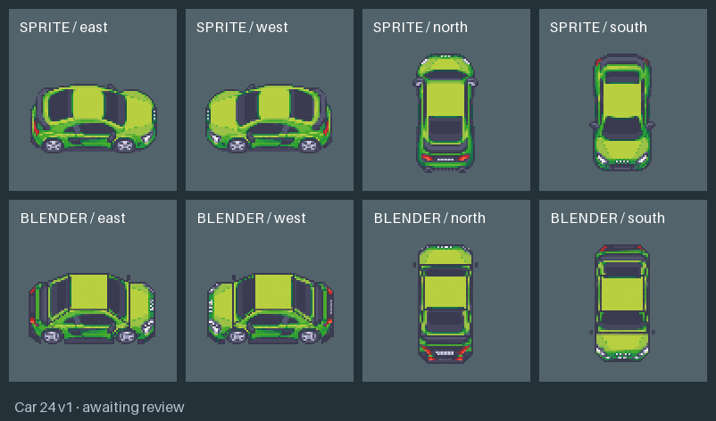
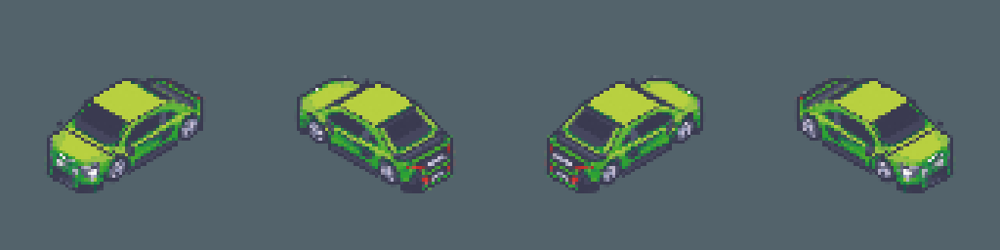
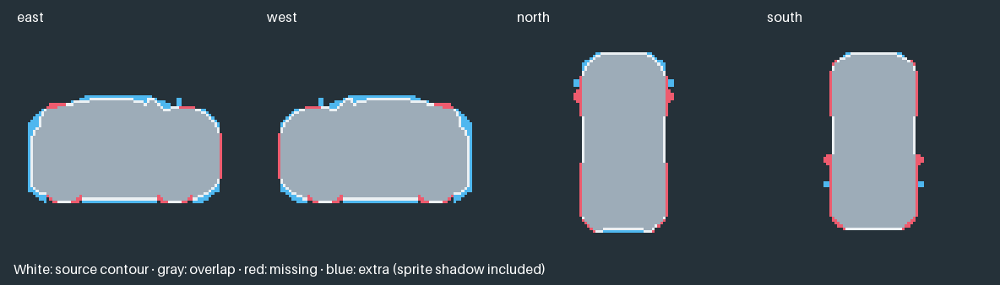

Original sprites above, matched Blender renders below.



Source: Modern Exteriors by LimeZu. Retained diagnostic; exact art review remains open.
Download the model · Other vehicle reviews · Tilefun Workshop